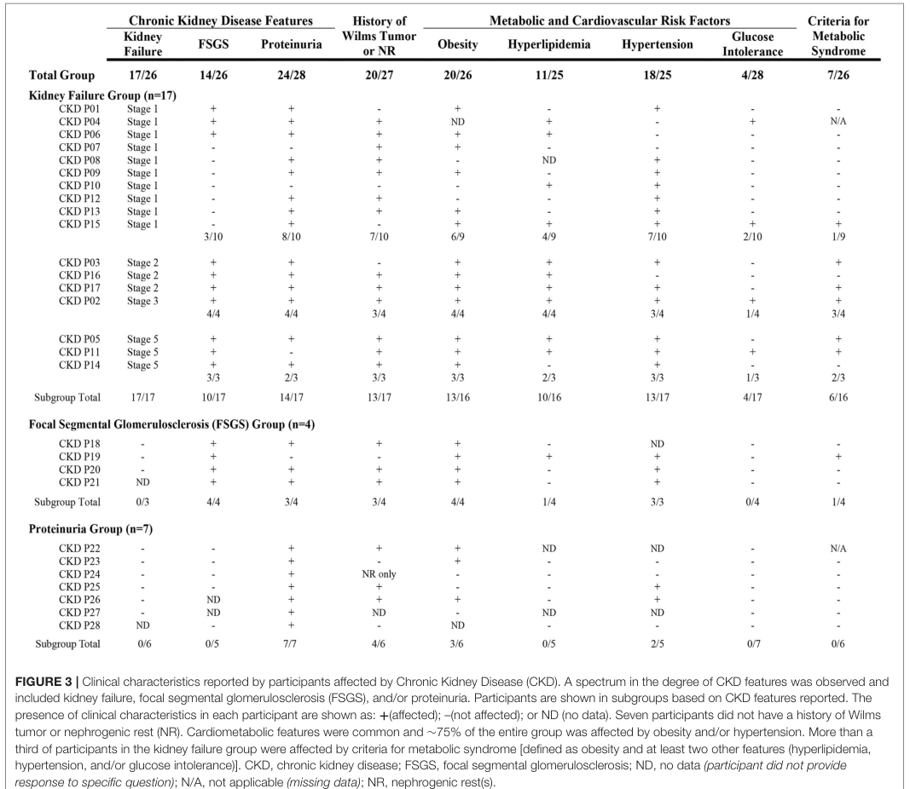

WAGR syndrome (WAGR spectrum disorder) is a rare contiguous-gene deletion disorder caused by a heterozygous interstitial deletion of chromosome band 11p13 that removes several adjacent genes, most importantly WT1 and PAX6. The acronym denotes its cardinal features: Wilms tumor, Aniridia, Genitourinary anomalies, and a Range of neurodevelopmental delay/intellectual disability. WT1 haploinsufficiency predisposes to Wilms tumor (nephroblastoma), genitourinary malformations, and later-onset nephropathy, while PAX6 haploinsufficiency causes aniridia and a pan-ocular developmental phenotype. The variable size of the deletion explains the phenotypic spectrum: when the deletion extends distally to include BDNF (11p14.1), affected individuals additionally develop childhood-onset obesity and hyperphagia, designated the WAGRO subtype. The disorder is almost always due to a de novo 11p13 deletion and is inherited in an autosomal dominant manner. The recognized phenotype has broadened to include neurobehavioral and psychiatric features, hypotonia, scoliosis, respiratory and gastrointestinal issues, and recurrent infections.
Ask a research question about WAGR Syndrome. OpenScientist will conduct autonomous deep research using the Disorder Mechanisms Knowledge Base and PubMed literature (typically 10-30 minutes).
Do not include personal health information in your question. Questions and results are cached in your browser's local storage.
name: WAGR Syndrome
creation_date: "2026-06-03T00:00:00Z"
category: Genetic
synonyms:
- WAGR spectrum disorder
- WAGR complex
- 11p13 deletion syndrome
- Wilms tumor-aniridia-genitourinary anomalies-intellectual disability syndrome
- WAGRO syndrome
description: >
WAGR syndrome (WAGR spectrum disorder) is a rare contiguous-gene deletion
disorder caused by a heterozygous interstitial deletion of chromosome band
11p13 that removes several adjacent genes, most importantly WT1 and PAX6. The
acronym denotes its cardinal features: Wilms tumor, Aniridia, Genitourinary
anomalies, and a Range of neurodevelopmental delay/intellectual disability.
WT1 haploinsufficiency predisposes to Wilms tumor (nephroblastoma), genitourinary
malformations, and later-onset nephropathy, while PAX6 haploinsufficiency causes
aniridia and a pan-ocular developmental phenotype. The variable size of the
deletion explains the phenotypic spectrum: when the deletion extends distally to
include BDNF (11p14.1), affected individuals additionally develop childhood-onset
obesity and hyperphagia, designated the WAGRO subtype. The disorder is almost
always due to a de novo 11p13 deletion and is inherited in an autosomal dominant
manner. The recognized phenotype has broadened to include neurobehavioral and
psychiatric features, hypotonia, scoliosis, respiratory and gastrointestinal
issues, and recurrent infections.
disease_term:
preferred_term: WAGR syndrome
term:
id: MONDO:0008681
label: WAGR syndrome
parents:
- Chromosomal microdeletion syndrome
- Hereditary neoplastic syndrome
references:
- reference: PMID:41818601
title: "WAGR Spectrum Disorder."
tags:
- GeneReviews
- reference: PMID:20301534
title: "PAX6 Aniridia Syndrome."
tags:
- GeneReviews
has_subtypes:
- name: WAGR
display_name: WAGR syndrome (BDNF intact)
description: >
Classic WAGR syndrome with an 11p13 deletion encompassing WT1 and PAX6 but
sparing BDNF. Affected individuals show Wilms tumor predisposition, aniridia,
genitourinary anomalies, and a range of developmental delay without the severe
childhood-onset obesity characteristic of the WAGRO subtype.
- name: WAGRO
display_name: WAGRO syndrome (BDNF-deleted)
description: >
Extended-deletion subtype in which the 11p deletion reaches distally to include
BDNF at 11p14.1. BDNF haploinsufficiency adds hyperphagia and childhood-onset
Obesity to the WAGR phenotype, giving the WAGRO acronym.
evidence:
- reference: PMID:23266638
reference_title: "The modifier effect of the BDNF gene in the phenotype of the WAGRO syndrome."
supports: SUPPORT
evidence_source: HUMAN_CLINICAL
snippet: "are susceptible to Wilms tumor, aniridia, mental retardation, genitourinary anomalies and obesity (WAGRO syndrome)"
explanation: >
Defines the WAGRO subtype as WAGR plus obesity arising from extension of the
deletion to include BDNF.
pathophysiology:
- name: 11p13 contiguous-gene deletion
description: >
WAGR syndrome results from a heterozygous, variably sized interstitial deletion
at chromosome 11p13 that simultaneously removes multiple contiguous genes,
obligately including WT1 and PAX6. Because the deletion is the unifying lesion,
the specific genes lost (and therefore the clinical features) depend on deletion
extent; larger deletions reaching BDNF produce the WAGRO obesity subphenotype.
evidence:
- reference: PMID:41818601
reference_title: "WAGR Spectrum Disorder."
supports: SUPPORT
evidence_source: HUMAN_CLINICAL
snippet: "a deletion of chromosome 11p13 that includes the genes WT1 and PAX6 identified by molecular genetic testing"
explanation: >
The GeneReviews diagnostic criterion confirms that a contiguous 11p13 deletion
removing both WT1 and PAX6 defines the disorder.
- reference: PMID:18753648
reference_title: "Brain-derived neurotrophic factor and obesity in the WAGR syndrome."
supports: SUPPORT
evidence_source: HUMAN_CLINICAL
snippet: "Heterozygous, variably sized, contiguous gene deletions causing haploinsufficiency of the WT1 and PAX6 genes on chromosome 11p13"
explanation: >
Confirms the contiguous-gene deletion mechanism and the variability in
deletion size that underlies the phenotypic spectrum.
- reference: PMID:34970513
reference_title: "Results From the WAGR Syndrome Patient Registry: Characterization of WAGR Spectrum and Recommendations for Care Management."
supports: SUPPORT
evidence_source: HUMAN_CLINICAL
snippet: "a broader phenotypic spectrum beyond the classic syndrome exists"
explanation: >
Registry data support reframing the contiguous-deletion disorder as a broad
WAGR spectrum whose manifestations depend on the genes deleted.
downstream:
- target: WT1 haploinsufficiency and Wilms tumor predisposition
description: >
The 11p13 deletion obligately removes one WT1 allele, producing WT1
haploinsufficiency.
- target: PAX6 haploinsufficiency and ocular maldevelopment
description: >
The 11p13 deletion obligately removes one PAX6 allele, producing PAX6
haploinsufficiency.
- target: BDNF haploinsufficiency and hypothalamic energy dysregulation
description: >
When the deletion extends distally to BDNF, one BDNF allele is lost, producing
BDNF haploinsufficiency (WAGRO subtype).
- name: WT1 haploinsufficiency and Wilms tumor predisposition
description: >
Loss of one WT1 allele removes a copy of the WT1 zinc-finger transcription
factor that is essential for normal nephrogenesis and gonadal development.
Haploinsufficiency, with subsequent somatic second hits in renal blastemal
cells, predisposes to Wilms tumor and contributes to genitourinary
malformations and later glomerular/kidney dysfunction.
gene:
preferred_term: WT1
term:
id: hgnc:12796
label: WT1
cell_types:
- preferred_term: nephrogenic blastemal cell
term:
id: CL:0000354
label: blastemal cell
- preferred_term: podocyte
term:
id: CL:0000653
label: podocyte
biological_processes:
- preferred_term: kidney development
term:
id: GO:0001822
label: kidney development
modifier: DECREASED
- preferred_term: gonad development
term:
id: GO:0008406
label: gonad development
modifier: ABNORMAL
evidence:
- reference: PMID:18753648
reference_title: "Brain-derived neurotrophic factor and obesity in the WAGR syndrome."
supports: SUPPORT
evidence_source: HUMAN_CLINICAL
snippet: "haploinsufficiency of the WT1 and PAX6 genes on chromosome 11p13"
explanation: >
WT1 haploinsufficiency in the contiguous deletion is the basis of the Wilms
tumor and genitourinary components of WAGR syndrome.
downstream:
- target: Nephroblastoma
description: >
WT1 haploinsufficiency with somatic second hits predisposes to Wilms tumor.
evidence:
- reference: PMID:33146894
reference_title: "Clinical characteristics and outcomes of children with WAGR syndrome and Wilms tumor and/or nephroblastomatosis: The 30-year SIOP-RTSG experience."
supports: SUPPORT
evidence_source: HUMAN_CLINICAL
snippet: "WAGR syndrome (Wilms tumor, aniridia, genitourinary anomalies, and range of developmental delays) is a rare contiguous gene deletion syndrome with a 45% to 60% risk of developing Wilms tumor (WT)"
explanation: >
The high Wilms tumor risk in WAGR is the clinical readout of WT1
haploinsufficiency predisposing to nephroblastoma.
- target: Genital anomalies
description: >
WT1 haploinsufficiency disrupts genital development, causing
genital anomalies including cryptorchidism.
- target: Congenital anomalies of the kidney and urinary tract
description: >
WT1 haploinsufficiency disrupts kidney and urinary tract development,
causing congenital anomalies of the kidney and urinary tract.
- target: Renal failure
description: >
WT1-associated nephropathy and the renal consequences of Wilms tumor can
progress to kidney failure.
- name: PAX6 haploinsufficiency and ocular maldevelopment
description: >
Loss of one PAX6 allele reduces dosage of the PAX6 master transcription factor
that controls eye morphogenesis. Haploinsufficiency causes classic aniridia
together with a pan-ocular phenotype affecting the cornea, lens, anterior
segment, fovea, and optic nerve, as well as central nervous system features.
gene:
preferred_term: PAX6
term:
id: hgnc:8620
label: PAX6
biological_processes:
- preferred_term: camera-type eye development
term:
id: GO:0043010
label: camera-type eye development
modifier: ABNORMAL
- preferred_term: iris morphogenesis
term:
id: GO:0061072
label: iris morphogenesis
modifier: DECREASED
evidence:
- reference: PMID:20301534
reference_title: "PAX6 Aniridia Syndrome."
supports: SUPPORT
evidence_source: HUMAN_CLINICAL
snippet: "Classic aniridia affects the iris (partial or full iris hypoplasia), cornea (corneal keratopathy), anterior segment"
explanation: >
GeneReviews documents that PAX6 dosage loss produces the pan-ocular aniridia
phenotype seen in WAGR syndrome.
downstream:
- target: Aniridia
description: >
PAX6 haploinsufficiency causes classic aniridia.
evidence:
- reference: PMID:20301534
reference_title: "PAX6 Aniridia Syndrome."
supports: SUPPORT
evidence_source: HUMAN_CLINICAL
snippet: "Classic aniridia affects the iris (partial or full iris hypoplasia)"
explanation: >
Classic aniridia is the direct ocular consequence of PAX6 dosage loss.
- target: Cataract
description: >
PAX6 haploinsufficiency contributes to the pan-ocular phenotype including
cataract.
- target: Glaucoma
description: >
PAX6-related anterior-segment dysgenesis raises intraocular pressure, causing
glaucoma.
- target: Nystagmus
description: >
Foveal hypoplasia and aniridia from PAX6 loss produce nystagmus.
- target: Foveal hypoplasia
description: >
PAX6 haploinsufficiency impairs foveal development, causing foveal hypoplasia.
- name: BDNF haploinsufficiency and hypothalamic energy dysregulation
description: >
When the 11p deletion extends distally to BDNF (11p14.1), brain-derived
neurotrophic factor dosage is reduced. BDNF acts in hypothalamic circuits
regulating energy homeostasis, and its haploinsufficiency produces hyperphagia
and childhood-onset obesity, defining the WAGRO subtype. Serum BDNF is roughly
halved in deletion carriers. Because BDNF also regulates CNS development and
synaptic plasticity, its haploinsufficiency additionally contributes to more
severe cognitive and adaptive-behavior impairment within WAGR syndrome.
gene:
preferred_term: BDNF
term:
id: hgnc:1033
label: BDNF
biological_processes:
- preferred_term: regulation of feeding behavior
term:
id: GO:0060259
label: regulation of feeding behavior
modifier: ABNORMAL
- preferred_term: regulation of synaptic plasticity
term:
id: GO:0048167
label: regulation of synaptic plasticity
modifier: ABNORMAL
evidence:
- reference: PMID:18753648
reference_title: "Brain-derived neurotrophic factor and obesity in the WAGR syndrome."
supports: SUPPORT
evidence_source: HUMAN_CLINICAL
snippet: "BDNF haploinsufficiency is associated with lower levels of serum BDNF and with childhood-onset obesity"
explanation: >
Han et al. directly link BDNF haploinsufficiency to reduced serum BDNF and
obesity in WAGR patients, establishing the WAGRO mechanism.
- reference: PMID:18753648
reference_title: "Brain-derived neurotrophic factor and obesity in the WAGR syndrome."
supports: SUPPORT
evidence_source: HUMAN_CLINICAL
snippet: "The critical region for childhood-onset obesity in the WAGR syndrome was located within 80 kb of exon 1 of BDNF"
explanation: >
Maps the obesity-critical region to BDNF, supporting the dosage mechanism for
the WAGRO phenotype.
- reference: PMID:23517654
reference_title: "Association of brain-derived neurotrophic factor (BDNF) haploinsufficiency with lower adaptive behaviour and reduced cognitive functioning in WAGR/11p13 deletion syndrome."
supports: SUPPORT
evidence_source: HUMAN_CLINICAL
snippet: "among subjects with WAGR syndrome, BDNF+/- subjects had a mean Vineland Adaptive Behaviour Compose score that was 14-points lower and a mean intelligence quotient (IQ) that was 20-points lower than BDNF+/+ subjects"
explanation: >
Demonstrates that BDNF haploinsufficiency within WAGR syndrome lowers adaptive
behavior and cognition, extending the BDNF dosage mechanism to neurocognitive
outcomes.
downstream:
- target: Hyperphagia
description: >
BDNF haploinsufficiency dysregulates hypothalamic energy balance, producing
hyperphagia.
- target: Childhood-onset obesity
description: >
BDNF-driven hyperphagia and impaired energy homeostasis produce childhood-onset
obesity in the WAGRO subtype.
evidence:
- reference: PMID:18753648
reference_title: "Brain-derived neurotrophic factor and obesity in the WAGR syndrome."
supports: SUPPORT
evidence_source: HUMAN_CLINICAL
snippet: "BDNF haploinsufficiency is associated with lower levels of serum BDNF and with childhood-onset obesity"
explanation: >
Directly links BDNF haploinsufficiency to childhood-onset obesity.
- target: Autism spectrum disorder
description: >
BDNF haploinsufficiency impairs CNS development and is associated with higher
rates of autistic features.
evidence:
- reference: PMID:23517654
reference_title: "Association of brain-derived neurotrophic factor (BDNF) haploinsufficiency with lower adaptive behaviour and reduced cognitive functioning in WAGR/11p13 deletion syndrome."
supports: PARTIAL
evidence_source: HUMAN_CLINICAL
snippet: "higher percentage meeting cut-off score for autism (p = .047) on Autism Diagnostic Interview-Revised"
explanation: >
BDNF-deletion WAGR subjects more often met autism cut-off scores, linking BDNF
dosage to autistic features (partial: modest significance in a small cohort).
phenotypes:
- name: Aniridia
description: >
Partial or complete absence/hypoplasia of the iris from PAX6 haploinsufficiency;
a near-constant and often presenting feature of WAGR syndrome.
phenotype_term:
preferred_term: Aniridia
term:
id: HP:0000526
label: Aniridia
evidence:
- reference: PMID:16199712
reference_title: "WAGR syndrome: a clinical review of 54 cases."
supports: SUPPORT
evidence_source: HUMAN_CLINICAL
snippet: "clinically associated with Wilms' tumor, aniridia, genitourinary anomalies, and mental retardation"
explanation: >
The 54-case clinical review lists aniridia as a cardinal feature of WAGR
syndrome.
- name: Nephroblastoma
description: >
Wilms tumor (nephroblastoma) predisposition driven by WT1 haploinsufficiency;
a defining and surveillance-relevant component of the syndrome.
phenotype_term:
preferred_term: Nephroblastoma
term:
id: HP:0002667
label: Nephroblastoma
frequency: FREQUENT
evidence:
- reference: PMID:16199712
reference_title: "WAGR syndrome: a clinical review of 54 cases."
supports: SUPPORT
evidence_source: HUMAN_CLINICAL
snippet: "clinically associated with Wilms' tumor, aniridia, genitourinary anomalies, and mental retardation"
explanation: >
Wilms tumor is the "W" of WAGR and a cardinal feature documented in the
clinical review.
- reference: PMID:33146894
reference_title: "Clinical characteristics and outcomes of children with WAGR syndrome and Wilms tumor and/or nephroblastomatosis: The 30-year SIOP-RTSG experience."
supports: SUPPORT
evidence_source: HUMAN_CLINICAL
snippet: "WAGR syndrome (Wilms tumor, aniridia, genitourinary anomalies, and range of developmental delays) is a rare contiguous gene deletion syndrome with a 45% to 60% risk of developing Wilms tumor (WT)"
explanation: >
Quantifies the high (45-60%) lifetime Wilms tumor risk in WAGR syndrome,
supporting FREQUENT frequency and the need for renal surveillance.
- name: Genital anomalies
description: >
Genital malformations including cryptorchidism, hypospadias, and ambiguous
genitalia, related to WT1 dosage loss; the "G" of WAGR.
phenotype_term:
preferred_term: Cryptorchidism
term:
id: HP:0000028
label: Cryptorchidism
evidence:
- reference: PMID:16199712
reference_title: "WAGR syndrome: a clinical review of 54 cases."
supports: SUPPORT
evidence_source: HUMAN_CLINICAL
snippet: "clinically associated with Wilms' tumor, aniridia, genitourinary anomalies, and mental retardation"
explanation: >
Genitourinary anomalies (the "G" of WAGR) are a cardinal feature; cryptorchidism
is a common genital manifestation.
- name: Congenital anomalies of the kidney and urinary tract
description: >
Structural anomalies of the kidney and urinary tract (CAKUT) are part of the
genitourinary spectrum of WAGR syndrome related to WT1 dosage loss.
phenotype_term:
preferred_term: Congenital anomalies of the kidney and urinary tract
term:
id: HP:0000079
label: Abnormality of the urinary system
evidence:
- reference: PMID:41818601
reference_title: "WAGR Spectrum Disorder."
supports: SUPPORT
evidence_source: HUMAN_CLINICAL
snippet: "genital anomalies and congenital anomalies of the kidney and urinary tract"
explanation: >
GeneReviews documents congenital anomalies of the kidney and urinary tract
among the urologic manifestations of WAGR spectrum disorder.
- name: Intellectual disability
description: >
A range of neurodevelopmental delay and intellectual disability of variable
severity; one of the cardinal WAGR features.
phenotype_term:
preferred_term: Intellectual disability
term:
id: HP:0001249
label: Intellectual disability
evidence:
- reference: PMID:24357251
reference_title: "Narrowing of the responsible region for severe developmental delay and autistic behaviors in WAGR syndrome down to 1.6 Mb including PAX6, WT1, and PRRG4."
supports: SUPPORT
evidence_source: HUMAN_CLINICAL
snippet: "Developmental delay and autistic features are major complications of this syndrome"
explanation: >
Developmental delay/intellectual disability is documented as a major
complication of WAGR syndrome.
- name: Childhood-onset obesity
description: >
Hyperphagia and early-onset obesity occurring in the WAGRO subtype when the
deletion includes BDNF.
subtype: WAGRO
phenotype_term:
preferred_term: Obesity
term:
id: HP:0001513
label: Obesity
evidence:
- reference: PMID:18753648
reference_title: "Brain-derived neurotrophic factor and obesity in the WAGR syndrome."
supports: SUPPORT
evidence_source: HUMAN_CLINICAL
snippet: "By 10 years of age, 100% of the patients with heterozygous BDNF deletions"
explanation: >
All BDNF-deletion (WAGRO) patients were obese by age 10, supporting
childhood-onset obesity as a subtype feature.
- name: Hyperphagia
description: >
Excessive food intake associated with BDNF haploinsufficiency in the WAGRO
subtype, contributing to childhood-onset obesity.
subtype: WAGRO
phenotype_term:
preferred_term: Hyperphagia
term:
id: HP:0002591
label: Polyphagia
evidence:
- reference: PMID:18753648
reference_title: "Brain-derived neurotrophic factor and obesity in the WAGR syndrome."
supports: SUPPORT
evidence_source: HUMAN_CLINICAL
snippet: "Hyperphagia and obesity were observed in a subgroup of patients with the WAGR syndrome"
explanation: >
Hyperphagia is reported in the obesity-prone subgroup of WAGR patients (the
WAGRO subtype with BDNF deletion).
- name: Autism spectrum disorder
description: >
Autistic behaviors and neurobehavioral features are common in WAGR syndrome,
with the responsible region narrowed to a 1.6 Mb interval containing PAX6, WT1,
and PRRG4.
phenotype_term:
preferred_term: Autism
term:
id: HP:0000717
label: Autism
evidence:
- reference: PMID:24357251
reference_title: "Narrowing of the responsible region for severe developmental delay and autistic behaviors in WAGR syndrome down to 1.6 Mb including PAX6, WT1, and PRRG4."
supports: SUPPORT
evidence_source: HUMAN_CLINICAL
snippet: "the region responsible for severe developmental delay and autistic features on WAGR syndrome can be narrowed down"
explanation: >
Autistic features are documented as a major complication and were genetically
mapped within the WAGR critical region.
- name: Attention deficit hyperactivity disorder
description: >
ADHD is a recurrent neurobehavioral feature of WAGR/PAX6-related disease,
reported in roughly a quarter of WAGR registry patients.
phenotype_term:
preferred_term: Attention deficit hyperactivity disorder
term:
id: HP:0007018
label: Attention deficit hyperactivity disorder
evidence:
- reference: PMID:20301534
reference_title: "PAX6 Aniridia Syndrome."
supports: SUPPORT
evidence_source: HUMAN_CLINICAL
snippet: "attention-deficit/hyperactivity disorder (ADHD)"
explanation: >
GeneReviews lists ADHD among the neurobehavioral/psychiatric manifestations
of PAX6 aniridia syndrome, which applies to WAGR syndrome.
- name: Anxiety
description: >
Anxiety is a common psychiatric manifestation of WAGR/PAX6-related disease,
reported in a substantial proportion of WAGR registry patients.
phenotype_term:
preferred_term: Anxiety
term:
id: HP:0000739
label: Anxiety
evidence:
- reference: PMID:20301534
reference_title: "PAX6 Aniridia Syndrome."
supports: SUPPORT
evidence_source: HUMAN_CLINICAL
snippet: "mood disorders such as depression and anxiety"
explanation: >
GeneReviews lists anxiety among the mood-disorder manifestations of PAX6
aniridia syndrome, which applies to WAGR syndrome.
- name: Cataract
description: >
Lens opacity occurring as part of the PAX6-related pan-ocular phenotype.
phenotype_term:
preferred_term: Cataract
term:
id: HP:0000518
label: Cataract
evidence:
- reference: PMID:20301534
reference_title: "PAX6 Aniridia Syndrome."
supports: SUPPORT
evidence_source: HUMAN_CLINICAL
snippet: "lens (cataract and lens subluxation)"
explanation: >
Cataract is part of the PAX6 aniridia syndrome ocular spectrum that applies to
WAGR aniridia.
- name: Glaucoma
description: >
Raised intraocular pressure and glaucoma from anterior-segment dysgenesis in the
PAX6-related ocular phenotype.
phenotype_term:
preferred_term: Glaucoma
term:
id: HP:0000501
label: Glaucoma
evidence:
- reference: PMID:20301534
reference_title: "PAX6 Aniridia Syndrome."
supports: SUPPORT
evidence_source: HUMAN_CLINICAL
snippet: "anterior segment (resulting in raised intraocular pressure and glaucoma)"
explanation: >
Glaucoma is documented in the PAX6 aniridia ocular phenotype relevant to WAGR.
- name: Nystagmus
description: >
Involuntary eye movements characteristically accompanying aniridia/foveal
hypoplasia in PAX6-related disease.
phenotype_term:
preferred_term: Nystagmus
term:
id: HP:0000639
label: Nystagmus
evidence:
- reference: PMID:20301534
reference_title: "PAX6 Aniridia Syndrome."
supports: SUPPORT
evidence_source: HUMAN_CLINICAL
snippet: "Individuals with classic aniridia characteristically show nystagmus and impaired visual acuity"
explanation: >
Nystagmus is a characteristic feature of classic aniridia, which is part of
WAGR syndrome.
- name: Foveal hypoplasia
description: >
Underdevelopment of the fovea contributing to impaired visual acuity in
PAX6-related aniridia.
phenotype_term:
preferred_term: Foveal hypoplasia
term:
id: HP:0007750
label: Hypoplasia of the fovea
evidence:
- reference: PMID:20301534
reference_title: "PAX6 Aniridia Syndrome."
supports: SUPPORT
evidence_source: HUMAN_CLINICAL
snippet: "fovea (foveal hypoplasia)"
explanation: >
Foveal hypoplasia is documented in the PAX6 aniridia ocular spectrum applicable
to WAGR.
- name: Recurrent infections
description: >
Recurrent infections are among the expanded phenotypic features of WAGR spectrum
disorder.
phenotype_term:
preferred_term: Recurrent infections
term:
id: HP:0002719
label: Recurrent infections
evidence:
- reference: PMID:41818601
reference_title: "WAGR Spectrum Disorder."
supports: SUPPORT
evidence_source: HUMAN_CLINICAL
snippet: "hypotonia and scoliosis, and recurrent infections"
explanation: >
GeneReviews lists recurrent infections among the expanded WAGR spectrum
findings.
- name: Hypotonia
description: >
Reduced muscle tone reported among the expanded WAGR spectrum features.
phenotype_term:
preferred_term: Hypotonia
term:
id: HP:0001252
label: Hypotonia
evidence:
- reference: PMID:41818601
reference_title: "WAGR Spectrum Disorder."
supports: SUPPORT
evidence_source: HUMAN_CLINICAL
snippet: "hypotonia and scoliosis, and recurrent infections"
explanation: >
GeneReviews lists hypotonia among the expanded WAGR spectrum findings.
- name: Scoliosis
description: >
Abnormal lateral curvature of the spine reported among the expanded WAGR
spectrum features.
phenotype_term:
preferred_term: Scoliosis
term:
id: HP:0002650
label: Scoliosis
evidence:
- reference: PMID:41818601
reference_title: "WAGR Spectrum Disorder."
supports: SUPPORT
evidence_source: HUMAN_CLINICAL
snippet: "hypotonia and scoliosis, and recurrent infections"
explanation: >
GeneReviews lists scoliosis among the expanded WAGR spectrum findings.
- name: Renal failure
description: >
Kidney failure can develop in WAGR spectrum disorder, related to WT1-associated
nephropathy and the renal consequences of Wilms tumor and its treatment.
phenotype_term:
preferred_term: Renal insufficiency
term:
id: HP:0000083
label: Renal insufficiency
evidence:
- reference: PMID:34970513
reference_title: "Results From the WAGR Syndrome Patient Registry: Characterization of WAGR Spectrum and Recommendations for Care Management."
supports: SUPPORT
evidence_source: HUMAN_CLINICAL
snippet: "patients affected by WAGR syndrome can develop obesity and kidney failure"
explanation: >
The WAGR patient registry documents kidney failure as a recognized
manifestation of the WAGR spectrum.
genetic:
- name: 11p13 contiguous-gene deletion
inheritance:
- name: Autosomal dominant
evidence:
- reference: PMID:41818601
reference_title: "WAGR Spectrum Disorder."
supports: SUPPORT
evidence_source: HUMAN_CLINICAL
snippet: "WAGR spectrum disorder is an autosomal dominant disorder typically caused by a de novo 11p13 deletion"
explanation: >
GeneReviews documents the autosomal dominant inheritance with a typically de
novo 11p13 deletion.
features: >
Heterozygous interstitial deletion of chromosome band 11p13 encompassing the
contiguous WT1 and PAX6 genes, typically de novo. Deletion size is variable;
extension distally to BDNF (11p14.1) produces the WAGRO obesity subtype.
evidence:
- reference: PMID:41818601
reference_title: "WAGR Spectrum Disorder."
supports: SUPPORT
evidence_source: HUMAN_CLINICAL
snippet: "WAGR spectrum disorder is an autosomal dominant disorder typically caused by a de novo 11p13 deletion"
explanation: >
GeneReviews establishes the autosomal dominant, usually de novo, 11p13 deletion
etiology.
- reference: PMID:18753648
reference_title: "Brain-derived neurotrophic factor and obesity in the WAGR syndrome."
supports: SUPPORT
evidence_source: HUMAN_CLINICAL
snippet: "Deletions of chromosome 11p in the patients studied ranged from 1.0 to 26.5 Mb; 58% of the patients had heterozygous BDNF deletions"
explanation: >
Documents the wide range of deletion sizes and the proportion extending to BDNF.
treatments:
- name: Wilms tumor surveillance
description: >
Routine renal imaging surveillance (e.g., abdominal/renal ultrasound on a
scheduled interval through early childhood) is recommended for WAGR patients
because of the high Wilms tumor risk, enabling early detection.
treatment_term:
preferred_term: surveillance for malignancies
term:
id: MAXO:0001492
label: surveillance for malignancies
evidence:
- reference: PMID:41818601
reference_title: "WAGR Spectrum Disorder."
supports: SUPPORT
evidence_source: HUMAN_CLINICAL
snippet: "Recommendations have been published regarding routinely scheduled follow up to monitor existing manifestations"
explanation: >
GeneReviews documents published scheduled surveillance recommendations, which
include Wilms tumor monitoring given the oncologic risk.
- reference: PMID:33146894
reference_title: "Clinical characteristics and outcomes of children with WAGR syndrome and Wilms tumor and/or nephroblastomatosis: The 30-year SIOP-RTSG experience."
supports: SUPPORT
evidence_source: HUMAN_CLINICAL
snippet: "intensive monitoring of toxicity and surveillance of the remaining kidney(s) are advised"
explanation: >
The SIOP-RTSG cohort advises ongoing surveillance of remaining kidney tissue
in WAGR patients given the high rate of bilateral disease.
- name: Wilms tumor surgical resection
description: >
Surgical resection of Wilms tumor (nephron-sparing surgery or nephrectomy),
the surgical component of the established multimodality Wilms tumor regimen
that also includes chemotherapy and risk-adapted radiation, coordinated by
pediatric oncology.
treatment_term:
preferred_term: nephrectomy
term:
id: MAXO:0001065
label: nephrectomy
evidence:
- reference: PMID:41818601
reference_title: "WAGR Spectrum Disorder."
supports: SUPPORT
evidence_source: HUMAN_CLINICAL
snippet: "oncology (Wilms tumor risk assessment and management)"
explanation: >
GeneReviews specifies pediatric oncology management of Wilms tumor risk, which
includes surgical resection when tumors arise.
- name: Wilms tumor chemotherapy
description: >
Chemotherapy is a core component of the multimodality Wilms tumor regimen in
WAGR syndrome, given alongside surgical resection and risk-adapted radiation
under pediatric oncology.
treatment_term:
preferred_term: chemotherapy
term:
id: MAXO:0000647
label: chemotherapy
evidence:
- reference: PMID:41818601
reference_title: "WAGR Spectrum Disorder."
supports: SUPPORT
evidence_source: HUMAN_CLINICAL
snippet: "oncology (Wilms tumor risk assessment and management)"
explanation: >
GeneReviews specifies pediatric oncology management of Wilms tumor, which
encompasses chemotherapy as a core element of the multimodality regimen.
- name: Aniridia and ophthalmologic management
description: >
Multidisciplinary ophthalmologic care for complications of aniridia, including
correction of refractive errors, tinted/photochromic lenses, glaucoma medication,
and cautious surgical management given keratopathy and foveal hypoplasia.
treatment_term:
preferred_term: supportive care
term:
id: MAXO:0000950
label: supportive care
evidence:
- reference: PMID:20301534
reference_title: "PAX6 Aniridia Syndrome."
supports: SUPPORT
evidence_source: HUMAN_CLINICAL
snippet: "use of topical anti-glaucoma medication to manage glaucoma when possible"
explanation: >
GeneReviews details ophthalmologic supportive management of aniridia
complications such as glaucoma.
- name: Developmental and behavioral support
description: >
Early childhood developmental intervention and management of intellectual
disability and neurobehavioral/psychiatric issues by developmental specialists.
treatment_term:
preferred_term: supportive care
term:
id: MAXO:0000950
label: supportive care
evidence:
- reference: PMID:41818601
reference_title: "WAGR Spectrum Disorder."
supports: SUPPORT
evidence_source: HUMAN_CLINICAL
snippet: "early childhood development (developmental delay / intellectual disability, neurobehavioral issues)"
explanation: >
GeneReviews recommends developmental and neurobehavioral support as part of
multidisciplinary WAGR care.
- name: Genetic counseling
description: >
Genetic counseling for recurrence-risk assessment, including parental genetic
and chromosome evaluation for predisposing rearrangements, with prenatal and
preimplantation genetic testing options.
treatment_term:
preferred_term: genetic counseling
term:
id: MAXO:0000079
label: genetic counseling
evidence:
- reference: PMID:41818601
reference_title: "WAGR Spectrum Disorder."
supports: SUPPORT
evidence_source: HUMAN_CLINICAL
snippet: "Recommended evaluations of the parents to confirm their genetic status and to allow reliable recurrence risk counseling"
explanation: >
GeneReviews recommends parental genetic evaluation and counseling for
recurrence-risk assessment in WAGR spectrum disorder families.
WAGR syndrome (also framed as WAGR spectrum disorder) is a developmental and cancer predisposition syndrome due to a germline 11p13 deletion encompassing WT1 and PAX6, classically manifesting Wilms tumor, aniridia, genitourinary anomalies, and intellectual disability/developmental delay. (hol2021clinicalcharacteristicsand pages 1-2, chbel2024conventionalandmolecular pages 1-2, duffy2021resultsfromthe pages 1-2)
Source type note: Much of the modern quantitative phenotype characterization comes from a patient registry (self-reported) (disease-level aggregation) rather than EHR-curated cohorts. (duffy2021resultsfromthe pages 1-2, duffy2021resultsfromthe pages 29-30)
Primary cause: germline heterozygous interstitial deletion at 11p13 involving (at minimum) WT1 and PAX6. (hol2021clinicalcharacteristicsand pages 1-2, souza2022characterizationofassociated pages 1-2, chbel2024conventionalandmolecular pages 1-2)
Inheritance: Typically de novo (sporadic) but can rarely be inherited through parental chromosomal rearrangements; parental genomic/chromosome evaluation is recommended in modern reviews. (george2026wagrspectrumdisorder pages 1-3)
No validated genetic or environmental protective factors were identified in the WAGR-focused retrieved evidence.
No explicit WAGR-specific GxE evidence was identified in retrieved sources.
Registry data (91 participants) support reframing as “WAGR spectrum” with high burden across ocular, neurodevelopmental, renal/urologic, and cardiometabolic domains. (duffy2021resultsfromthe pages 1-2, duffy2021resultsfromthe pages 9-11)
Ocular / visual system * Eye issues: 85/85 (100%) (duffy2021resultsfromthe pages 8-9) * Nystagmus: 77/82 (93.9%) (duffy2021resultsfromthe pages 8-9) * Cataracts: 68/79 (86.1%) (duffy2021resultsfromthe pages 8-9) Suggested HPO terms: Aniridia (HP:0000526), Nystagmus (HP:0000639), Cataract (HP:0000518), Foveal hypoplasia (HP:0007750) (the last is commonly associated with aniridia but not quantified in the retrieved registry excerpts).
Wilms tumor / nephroblastomatosis predisposition * Registry: Wilms tumor and/or nephrogenic rests: 42/77 (54.5%); Wilms tumor specifically: 36/77 (46.8%) (duffy2021resultsfromthe pages 2-4) * Cohort-based risk estimate: 45%–60% lifetime Wilms tumor risk (hol2021clinicalcharacteristicsand pages 1-2) Suggested HPO terms: Wilms tumor (HP:0002667), Nephroblastomatosis / nephrogenic rests (often encoded as nephroblastomatosis; HPO usage may vary).
Neurodevelopmental / psychiatric (patient registry) * Cognitive and/or learning problems: 69/78 (88.5%) (duffy2021resultsfromthe pages 6-7) * Cognitive impairment: 45/78 (57.7%) (duffy2021resultsfromthe pages 6-7) * Global developmental delay: 44/78 (56.4%) (duffy2021resultsfromthe pages 6-7) * Autism spectrum disorder: 19/76 (25.0%) (duffy2021resultsfromthe pages 6-7) * ADD/ADHD: 18/76 (23.7%) (duffy2021resultsfromthe pages 6-7) * Anxiety disorder: 30/68 (44.1%) (duffy2021resultsfromthe pages 6-7) Suggested HPO terms: Global developmental delay (HP:0001263), Intellectual disability (HP:0001249), Autism (HP:0000717), Attention deficit hyperactivity disorder (HP:0007018), Anxiety (HP:0000739).
Neurologic / tone / seizures * Abnormal muscle control/tone: 53/77 (68.8%) (duffy2021resultsfromthe pages 8-9) * Seizures: 12/66 (18.1%) (duffy2021resultsfromthe pages 8-9) Suggested HPO terms: Hypotonia (HP:0001252), Seizures (HP:0001250).
Kidney / CAKUT / UTI / CKD * CAKUT may be underappreciated historically; “more than half” had ≥1 kidney condition (registry narrative). (duffy2021resultsfromthe pages 9-11) * CAKUT frequency in registry-derived summary: 38.5% (george2026wagrspectrumdisorder pages 3-5) * Among 15 with recurrent UTI, 9 (60.0%) had a CAKUT-consistent issue (duffy2021resultsfromthe pages 6-7) Suggested HPO terms: Congenital anomaly of kidney and urinary tract (HP:0000078), Recurrent urinary tract infections (HP:0000010), Chronic kidney disease (HP:0012622).
Cardiometabolic / obesity * Registry: “∼75% of the entire group was affected by obesity and/or hypertension” (duffy2021resultsfromthe pages 9-11) * In participants with reported BDNF deletion, ~two-thirds reported obesity (17/26) (duffy2021resultsfromthe pages 6-7) Suggested HPO terms: Obesity (HP:0001513), Hypertension (HP:0000822), Hyperlipidemia (HP:0003124), Abnormal glucose tolerance (HP:0001952).
Quality of life impact The retrieved evidence set did not include standardized QoL instruments (e.g., PROMIS, SF-36), but the high prevalence of ocular disease plus neurodevelopmental and metabolic/renal issues implies substantial lifelong functional impact and need for multidisciplinary care. (duffy2021resultsfromthe pages 9-11, george2026wagrspectrumdisorder pages 1-3)
HGNC gene symbols: WT1, PAX6, BDNF.
Predominant pathogenic mechanism is copy-number loss (heterozygous deletion; contiguous gene deletion) rather than single-nucleotide variants. (hol2021clinicalcharacteristicsand pages 1-2, chbel2024conventionalandmolecular pages 2-5)
Variant type/class: structural variant / CNV (microdeletion); typically germline. (chbel2024conventionalandmolecular pages 1-2)
Allele frequency: not applicable in the conventional SNV sense; deletions are generally de novo and rare.
BDNF is the best-supported modifier/extension gene for the “WAGRO” phenotype (obesity, adaptive/cognitive effects). (duffy2021resultsfromthe pages 6-7, han2013associationofbrainderived pages 1-2) A candidate-gene association study of common BDNF variants (tag SNPs) did not find strong evidence of a common-variant modifier effect on BMI in their WAGRO context, suggesting deletion/haploinsufficiency is more important than common polymorphism in driving the phenotype. (rodriguezlopez2013themodifiereffect pages 3-4)
A WAGR case study evaluated methylation at imprinting control regions and found normal methylation patterns, concluding that epigenetic contributions remain to be characterized. (takada2017sustainedendocrineprofiles pages 1-3)
Suggested GO biological process terms (examples): * Eye development: GO:0001654 (eye development) * Kidney development: GO:0001822 (kidney development) * Regulation of feeding behavior: GO:0060259 (regulation of feeding behavior) * Synaptic plasticity: GO:0048167 (regulation of synaptic plasticity)
Suggested CL cell types (examples): * Hypothalamic neuron: CL:0000679 (neuron) (more specific hypothalamic subtypes not extractable from retrieved WAGR sources) * Podocyte relevance is discussed in WT1-related disorders broadly but not specifically extracted here.
No WAGR-specific environmental toxin, lifestyle, or infectious triggers were identified in the retrieved disease-focused sources. Management of obesity and cardiovascular risk is nonetheless likely to involve standard lifestyle/environmental interventions as part of general care pathways (not specific to WAGR evidence in this set).
1) Germline 11p13 deletion removes WT1 + PAX6 (± BDNF and other genes) → 2) Developmental dysregulation of eye structures (PAX6), genitourinary/kidney development and tumor suppression (WT1), and neurotrophic signaling impacting cognition and energy balance (BDNF) → 3) Clinical manifestations: aniridia/panocular disease, Wilms tumor predisposition, GU anomalies/CAKUT/CKD, neurodevelopmental and psychiatric disorders, obesity/metabolic syndrome features. (hol2021clinicalcharacteristicsand pages 1-2, duffy2021resultsfromthe pages 9-11, han2013associationofbrainderived pages 1-2)
A key mechanistic anchor is the observation that heterozygous Bdnf knockout mice show hyperphagia/obesity and learning/social-behavior deficits, paralleling human WAGR/WAGRO features. (han2013associationofbrainderived pages 1-2)
In a WAGR cohort stratified by BDNF deletion status, BDNF+/− subjects had ~14-point lower Vineland Adaptive Behaviour scores and ~20-point lower mean IQ compared with BDNF+/+ subjects, supporting BDNF dosage as a driver of adaptive/cognitive outcomes. (han2013associationofbrainderived pages 1-2)
Primary organ systems * Eye (aniridia/panocular anomalies): UBERON suggestion UBERON:0000970 (eye) (duffy2021resultsfromthe pages 8-9) * Kidney (Wilms tumor risk; CAKUT; CKD): UBERON:0002113 (kidney) (hol2021clinicalcharacteristicsand pages 1-2, duffy2021resultsfromthe pages 9-11) * Genitourinary tract: UBERON:0000990 (reproductive system) and UBERON:0000057 (ureter) for CAKUT-related structures (phenotype category supported; detailed UBERON mapping not enumerated in retrieved excerpts) (chbel2024conventionalandmolecular pages 1-2) * Brain (neurodevelopmental and behavioral phenotypes): UBERON:0000955 (brain) (duffy2021resultsfromthe pages 6-7)
Subcellular/cellular components Not systematically described in retrieved WAGR-focused clinical sources.
In a 30-year SIOP-RTSG WAGR WT/nephroblastomatosis cohort (n=43): * 5-year event-free survival: 84.3% * 5-year overall survival: 91.2% with frequent nephrogenic rests (78.9%) and substantial bilateral disease (37.5%). (hol2021clinicalcharacteristicsand pages 1-2)
Registry evidence indicates substantial long-term burden from renal disease and cardiometabolic complications; “∼75%” had obesity and/or hypertension, and kidney conditions were common. (duffy2021resultsfromthe pages 9-11)
Standard Wilms tumor therapy (surgery and chemotherapy) is applied when WT develops; a WAGR endocrine case describes tumor resection and chemotherapy with favorable response. (takada2017sustainedendocrineprofiles pages 1-3)
WAGR management includes regular monitoring and treatment of aniridia-associated ocular complications (e.g., glaucoma, cataract, corneal changes), though detailed procedure-level recommendations were not fully enumerated in the retrieved WAGR-specific sources beyond “regular monitoring of visual function.” (chbel2024conventionalandmolecular pages 2-5, george2026wagrspectrumdisorder pages 1-3)
Given high registry frequencies of learning problems, ASD/ADHD, anxiety, and tone abnormalities, early developmental services and behavioral/psychiatric care are a core component of multidisciplinary management. (duffy2021resultsfromthe pages 6-7, george2026wagrspectrumdisorder pages 1-3)
Registry data demonstrate frequent obesity/hypertension, especially among those with BDNF deletion, supporting early monitoring of weight trajectory, blood pressure, lipids, and glucose, integrated with standard pediatric obesity interventions. (duffy2021resultsfromthe pages 9-11, duffy2021resultsfromthe pages 6-7, george2026wagrspectrumdisorder pages 13-16)
Registry authors explicitly conclude that “A comprehensive care management approach is needed … and we propose a care model” for WAGR spectrum disorder, emphasizing coordinated longitudinal care. (duffy2021resultsfromthe pages 1-2, duffy2021resultsfromthe pages 29-30)
MAXO term suggestions (examples): * Renal ultrasound surveillance: MAXO:0000837 (ultrasonography) (ontology mapping suggestion) * Genetic counseling: MAXO:0000079 (genetic counseling) * Multidisciplinary care coordination: MAXO:0000138 (care coordination)
Primary prevention: not generally applicable (germline deletion typically de novo), but reproductive counseling and prenatal/preimplantation options may be offered once a familial rearrangement/deletion is identified. (george2026wagrspectrumdisorder pages 13-16)
Secondary prevention (early detection): Wilms tumor surveillance * AACR 2024 guidance: ultrasound surveillance every 3 months until the 7th birthday for WT predisposition syndromes (renal ultrasound when only WT risk; complete abdominal US if hepatoblastoma risk also applies). (kalish2024updateonsurveillance pages 12-14) * WAGR registry care recommendation: renal ultrasound every 3 months below age 8 years, then individualized; at least annual renal ultrasound recommended for long-term kidney health monitoring. (duffy2021resultsfromthe pages 18-19)
Tertiary prevention: monitoring/management of CKD progression and cardiometabolic risk factors to reduce long-term morbidity. (duffy2021resultsfromthe pages 9-11, george2026wagrspectrumdisorder pages 13-16)
No naturally occurring veterinary analogue of WAGR syndrome was identified in the retrieved sources.
BDNF-related WAGR/WAGRO features are supported by animal models referenced in WAGR-focused human studies: heterozygous Bdnf knockout mice show hyperphagia/obesity and learning/social-behavior deficits, aligning with obesity and neurodevelopmental phenotypes in BDNF-deleted WAGR individuals. (han2013associationofbrainderived pages 1-2)
1) Updated cancer surveillance guidance (2024): AACR Pediatric Cancer Working Group updated recommendations; WAGR is categorized as high-risk for WT (45–60%) and therefore fits standardized q3-month ultrasound surveillance through early childhood. (kalish2024updateonsurveillance pages 5-6, kalish2024updateonsurveillance pages 12-14)
2) Cytogenetic diagnostic implementation (2024 case report): Practical workflows using karyotype + array CGH (with FISH as needed) to define deletion size/breakpoints and guide surveillance and counseling, emphasizing the importance of differentiating isolated aniridia from WAGR. (chbel2024conventionalandmolecular pages 2-5, chbel2024conventionalandmolecular pages 1-2)
3) Registry-driven care models: WAGR patient registry data are being used to formalize multidisciplinary care pathways and quantify the expanded phenotype (renal, metabolic, neuropsychiatric), which supports real-world implementation of coordinated long-term surveillance beyond Wilms tumor screening. (duffy2021resultsfromthe pages 1-2, duffy2021resultsfromthe pages 9-11)
The following table consolidates key identifiers, genes, quantitative risks/frequencies, and surveillance recommendations.
| Item | Value/Recommendation | Evidence type (guideline/cohort/registry/case report) | Source (citation id) |
|---|---|---|---|
| Disease name | WAGR syndrome; increasingly reframed as WAGR spectrum disorder because manifestations extend beyond the classic acronym | Registry synthesis / review | (duffy2021resultsfromthe pages 1-2, duffy2021resultsfromthe pages 29-30) |
| OMIM identifier | OMIM #194072 | Case series / review | (chbel2024conventionalandmolecular pages 1-2) |
| Common expansion of acronym | Wilms tumor, Aniridia, Genitourinary anomalies, and Range of developmental delays; older literature may use “mental retardation/intellectual disability” | Registry / review | (duffy2021resultsfromthe pages 1-2, chbel2024conventionalandmolecular pages 1-2) |
| Synonym / subtype term | WAGRO used when childhood-onset obesity is present, typically with deletion extending to BDNF | Case report / registry | (chbel2024conventionalandmolecular pages 1-2, duffy2021resultsfromthe pages 1-2) |
| Core genomic lesion | Contiguous 11p13 deletion involving WT1 and PAX6 is the defining lesion for WAGR syndrome | Cohort / review / case report | (hol2021clinicalcharacteristicsand pages 1-2, chbel2024conventionalandmolecular pages 1-2, souza2022characterizationofassociated pages 1-2) |
| Core genes | WT1 (tumor suppressor, kidney/gonadal development) and PAX6 (ocular/neurodevelopment) | Cohort / review / case report | (hol2021clinicalcharacteristicsand pages 1-2, chbel2024conventionalandmolecular pages 1-2, souza2022characterizationofassociated pages 1-2) |
| Modifier / extension gene | BDNF deletion occurs in about ~50% of registry respondents with molecular data and is associated with obesity; WAGRO concept reflects this extension | Registry | (duffy2021resultsfromthe pages 1-2, duffy2021resultsfromthe pages 2-4) |
| Other candidate genes in expanded phenotype | Additional genes in larger deletions may contribute to behavioral/cognitive or nonclassic phenotypes (e.g., PRRG4 and others discussed in region-based studies) | Review / genotype-phenotype study | (george2026wagrspectrumdisorder pages 18-20, souza2022characterizationofassociated pages 15-15) |
| Lifetime Wilms tumor risk in WAGR | 45%–60% | Guideline / cohort | (kalish2024updateonsurveillance pages 5-6, hol2021clinicalcharacteristicsand pages 1-2) |
| Registry frequency of Wilms tumor / nephrogenic rests | 42/77 (54.5%) reported Wilms tumor and/or nephrogenic rests | Registry | (duffy2021resultsfromthe pages 2-4) |
| Registry frequency of Wilms tumor specifically | 36/77 (46.8%) developed Wilms tumor | Registry | (duffy2021resultsfromthe pages 2-4) |
| Age at WT/nephroblastomatosis diagnosis | Median 22 months (range 6–44 months) in SIOP-RTSG series | Cohort | (hol2021clinicalcharacteristicsand pages 1-2) |
| Bilateral WT frequency | 37.5% bilateral disease in SIOP-RTSG cohort | Cohort | (hol2021clinicalcharacteristicsand pages 1-2) |
| Metastatic / anaplastic WT in cohort | No metastases or anaplasia reported in the SIOP-RTSG cohort; nephrogenic rests were common (78.9%) | Cohort | (hol2021clinicalcharacteristicsand pages 1-2) |
| WT outcomes | 5-year event-free survival 84.3%; overall survival 91.2% | Cohort | (hol2021clinicalcharacteristicsand pages 1-2) |
| BDNF deletion frequency | Registry molecular-response subset: 27/54 (~50%) selected BDNF deletion | Registry | (duffy2021resultsfromthe pages 2-4) |
| Obesity among those with reported BDNF deletion | 17/26 (~65%) reported obesity; 7/22 (~32%) reported obesity with short stature | Registry | (duffy2021resultsfromthe pages 6-7) |
| Cardiometabolic burden | ~75% of the WAGR Discovery Cohort had obesity and/or hypertension | Registry | (duffy2021resultsfromthe pages 9-11) |
| Kidney involvement | More than half of participants had at least one kidney condition; CAKUT may be underappreciated in WAGR | Registry | (duffy2021resultsfromthe pages 9-11) |
| CAKUT frequency | 38.5% reported in registry-derived summary | Registry synthesis | (george2026wagrspectrumdisorder pages 3-5) |
| Recurrent UTI association | Among 15 with recurrent UTIs, 9 (60.0%) had a CAKUT-consistent issue | Registry | (duffy2021resultsfromthe pages 6-7) |
| Cognitive/learning problems | 69/78 (88.5%) | Registry | (duffy2021resultsfromthe pages 6-7) |
| Cognitive impairment | 45/78 (57.7%) | Registry | (duffy2021resultsfromthe pages 6-7) |
| Global developmental delay | 44/78 (56.4%) | Registry | (duffy2021resultsfromthe pages 6-7) |
| Autism spectrum disorder | 19/76 (25.0%) | Registry | (duffy2021resultsfromthe pages 6-7) |
| ADD/ADHD | 18/76 (23.7%) | Registry | (duffy2021resultsfromthe pages 6-7) |
| Anxiety disorder | 30/68 (44.1%) | Registry | (duffy2021resultsfromthe pages 6-7) |
| Neurologic / muscle tone abnormalities | Abnormal muscle control/tone 53/77 (68.8%); seizures 12/66 (18.1%); neurological problems 28/74 (37.8%) | Registry | (duffy2021resultsfromthe pages 8-9) |
| Ocular involvement | Eye issues were universal in registry participants with available data (85/85, 100%); aniridia was nearly universal | Registry | (duffy2021resultsfromthe pages 8-9, duffy2021resultsfromthe pages 2-4) |
| AACR 2024 WT surveillance principle | WAGR WT risk is high and surveillance follows standard WT predisposition recommendations | Guideline | (kalish2024updateonsurveillance pages 5-6, kalish2024updateonsurveillance pages 12-14) |
| AACR 2024 WT surveillance modality and interval | Renal ultrasound every 3 months until the 7th birthday for WT-predisposition syndromes without hepatoblastoma risk | Guideline | (kalish2024updateonsurveillance pages 12-14) |
| Rationale for AACR age cutoff | Surveillance window chosen to cover the age range in which ~95% of WT develop | Guideline | (kalish2024updateonsurveillance pages 12-14) |
| Registry care recommendation for WT surveillance | Renal ultrasound every 3 months below age 8 years for all patients considered at risk; more frequent if abnormalities suspected | Registry care recommendation | (duffy2021resultsfromthe pages 18-19) |
| Registry long-term renal follow-up | After age 8, renal ultrasound frequency should be individualized; at least annual renal ultrasound recommended to monitor CKD risk | Registry care recommendation | (duffy2021resultsfromthe pages 18-19) |
| Additional renal concern | Because WAGR carries significant CKD risk, kidney-health monitoring should continue into adolescence and beyond | Guideline / registry care recommendation | (kalish2024updateonsurveillance pages 5-6, duffy2021resultsfromthe pages 18-19) |
Table: This table consolidates identifiers, genomic basis, quantitative clinical risks, phenotype frequencies, and current Wilms tumor surveillance recommendations for WAGR syndrome/WAGR spectrum disorder. It is useful as a compact evidence map for populating disease knowledge-base fields with cited values.
A registry figure supporting cardiometabolic features in CKD-affected participants was retrieved and is available for visual reference. (duffy2021resultsfromthe media 332392c7)
References
(hol2021clinicalcharacteristicsand pages 1-2): Janna A. Hol, Marjolijn C. J. Jongmans, Hélène Sudour‐Bonnange, Gema L. Ramírez‐Villar, Tanzina Chowdhury, Catherine Rechnitzer, Niklas Pal, Gudrun Schleiermacher, Axel Karow, Roland P. Kuiper, Beatriz de Camargo, Simona Avcin, Danka Redzic, Antonio Wachtel, Heidi Segers, Gordan M. Vujanic, Harm van Tinteren, Christophe Bergeron, Kathy Pritchard‐Jones, Norbert Graf, and Marry M. van den Heuvel‐Eibrink. Clinical characteristics and outcomes of children with wagr syndrome and wilms tumor and/or nephroblastomatosis: the 30‐year siop‐rtsg experience. Cancer, 127:628-638, Nov 2021. URL: https://doi.org/10.1002/cncr.33304, doi:10.1002/cncr.33304. This article has 51 citations and is from a domain leading peer-reviewed journal.
(duffy2021resultsfromthe pages 1-2): Kelly A. Duffy, Kelly L. Trout, Jennifer M. Gunckle, Shari McCullen Krantz, John Morris, and Jennifer M. Kalish. Results from the wagr syndrome patient registry: characterization of wagr spectrum and recommendations for care management. Frontiers in Pediatrics, Dec 2021. URL: https://doi.org/10.3389/fped.2021.733018, doi:10.3389/fped.2021.733018. This article has 42 citations.
(chbel2024conventionalandmolecular pages 1-2): Faiza Chbel, Hasna Hamdaoui, Houssein Mossafa, Karim Ouldim, and Houda Benrahma. Conventional and molecular cytogenetic characterization of a moroccan patient with wagr syndrome. Egyptian Journal of Medical Human Genetics, Mar 2024. URL: https://doi.org/10.1186/s43042-024-00514-5, doi:10.1186/s43042-024-00514-5. This article has 2 citations and is from a peer-reviewed journal.
(kalish2024updateonsurveillance pages 12-14): Jennifer M. Kalish, Kerri D. Becktell, Gaëlle Bougeard, Garrett M. Brodeur, Lisa R. Diller, Andrea S. Doria, Jordan R. Hansford, Steven D. Klein, Wendy K. Kohlmann, Christian P. Kratz, Suzanne P. MacFarland, Kristian W. Pajtler, Surya P. Rednam, Jaclyn Schienda, Lisa J. States, Anita Villani, Rosanna Weksberg, Kristin Zelley, Gail E. Tomlinson, and Jack J. Brzezinski. Update on surveillance for wilms tumor and hepatoblastoma in beckwith-wiedemann syndrome and other predisposition syndromes. Clinical cancer research : an official journal of the American Association for Cancer Research, 30:5260-5269, Sep 2024. URL: https://doi.org/10.1158/1078-0432.ccr-24-2100, doi:10.1158/1078-0432.ccr-24-2100. This article has 46 citations.
(duffy2021resultsfromthe pages 9-11): Kelly A. Duffy, Kelly L. Trout, Jennifer M. Gunckle, Shari McCullen Krantz, John Morris, and Jennifer M. Kalish. Results from the wagr syndrome patient registry: characterization of wagr spectrum and recommendations for care management. Frontiers in Pediatrics, Dec 2021. URL: https://doi.org/10.3389/fped.2021.733018, doi:10.3389/fped.2021.733018. This article has 42 citations.
(duffy2021resultsfromthe pages 8-9): Kelly A. Duffy, Kelly L. Trout, Jennifer M. Gunckle, Shari McCullen Krantz, John Morris, and Jennifer M. Kalish. Results from the wagr syndrome patient registry: characterization of wagr spectrum and recommendations for care management. Frontiers in Pediatrics, Dec 2021. URL: https://doi.org/10.3389/fped.2021.733018, doi:10.3389/fped.2021.733018. This article has 42 citations.
(kalish2024updateonsurveillance pages 5-6): Jennifer M. Kalish, Kerri D. Becktell, Gaëlle Bougeard, Garrett M. Brodeur, Lisa R. Diller, Andrea S. Doria, Jordan R. Hansford, Steven D. Klein, Wendy K. Kohlmann, Christian P. Kratz, Suzanne P. MacFarland, Kristian W. Pajtler, Surya P. Rednam, Jaclyn Schienda, Lisa J. States, Anita Villani, Rosanna Weksberg, Kristin Zelley, Gail E. Tomlinson, and Jack J. Brzezinski. Update on surveillance for wilms tumor and hepatoblastoma in beckwith-wiedemann syndrome and other predisposition syndromes. Clinical cancer research : an official journal of the American Association for Cancer Research, 30:5260-5269, Sep 2024. URL: https://doi.org/10.1158/1078-0432.ccr-24-2100, doi:10.1158/1078-0432.ccr-24-2100. This article has 46 citations.
(duffy2021resultsfromthe pages 29-30): Kelly A. Duffy, Kelly L. Trout, Jennifer M. Gunckle, Shari McCullen Krantz, John Morris, and Jennifer M. Kalish. Results from the wagr syndrome patient registry: characterization of wagr spectrum and recommendations for care management. Frontiers in Pediatrics, Dec 2021. URL: https://doi.org/10.3389/fped.2021.733018, doi:10.3389/fped.2021.733018. This article has 42 citations.
(souza2022characterizationofassociated pages 1-2): Vanessa Sodré de Souza, Gabriela Corassa Rodrigues da Cunha, Beatriz R. Versiani, Claudiner Pereira de Oliveira, Maria Teresa Alves Silva Rosa, Silviene F. de Oliveira, Patricia N. Moretti, Juliana F. Mazzeu, and Aline Pic-Taylor. Characterization of associated nonclassical phenotypes in patients with deletion in the wagr region identified by chromosomal microarray: new insights and literature review. Molecular Syndromology, 13:1-15, Feb 2022. URL: https://doi.org/10.1159/000518872, doi:10.1159/000518872. This article has 2 citations and is from a peer-reviewed journal.
(george2026wagrspectrumdisorder pages 1-3): AM George, Z Katz, and ER Hathaway. Wagr spectrum disorder. Unknown journal, 2026.
(han2013associationofbrainderived pages 1-2): Joan C. Han, Audrey Thurm, Christine Golden Williams, Lisa A. Joseph, Wadih M. Zein, Brian P. Brooks, John A. Butman, Sheila M. Brady, Shannon R. Fuhr, Melanie D. Hicks, Amanda E. Huey, Alyson E. Hanish, Kristen M. Danley, Margarita J. Raygada, Owen M. Rennert, Keri Martinowich, Stephen J. Sharp, Jack W. Tsao, and Susan E. Swedo. Association of brain-derived neurotrophic factor (bdnf) haploinsufficiency with lower adaptive behaviour and reduced cognitive functioning in wagr/11p13 deletion syndrome. Cortex, 49(10):2700-2710, Nov 2013. URL: https://doi.org/10.1016/j.cortex.2013.02.009, doi:10.1016/j.cortex.2013.02.009. This article has 86 citations and is from a domain leading peer-reviewed journal.
(duffy2021resultsfromthe pages 2-4): Kelly A. Duffy, Kelly L. Trout, Jennifer M. Gunckle, Shari McCullen Krantz, John Morris, and Jennifer M. Kalish. Results from the wagr syndrome patient registry: characterization of wagr spectrum and recommendations for care management. Frontiers in Pediatrics, Dec 2021. URL: https://doi.org/10.3389/fped.2021.733018, doi:10.3389/fped.2021.733018. This article has 42 citations.
(duffy2021resultsfromthe pages 6-7): Kelly A. Duffy, Kelly L. Trout, Jennifer M. Gunckle, Shari McCullen Krantz, John Morris, and Jennifer M. Kalish. Results from the wagr syndrome patient registry: characterization of wagr spectrum and recommendations for care management. Frontiers in Pediatrics, Dec 2021. URL: https://doi.org/10.3389/fped.2021.733018, doi:10.3389/fped.2021.733018. This article has 42 citations.
(george2026wagrspectrumdisorder pages 3-5): AM George, Z Katz, and ER Hathaway. Wagr spectrum disorder. Unknown journal, 2026.
(chbel2024conventionalandmolecular pages 2-5): Faiza Chbel, Hasna Hamdaoui, Houssein Mossafa, Karim Ouldim, and Houda Benrahma. Conventional and molecular cytogenetic characterization of a moroccan patient with wagr syndrome. Egyptian Journal of Medical Human Genetics, Mar 2024. URL: https://doi.org/10.1186/s43042-024-00514-5, doi:10.1186/s43042-024-00514-5. This article has 2 citations and is from a peer-reviewed journal.
(rodriguezlopez2013themodifiereffect pages 3-4): Raquel Rodríguez-López, José M. Carbonell Pérez, Aránzazu Margallo Balsera, Guillermo Gervasini Rodríguez, Trinidad Herrera Moreno, Mayte García de Cáceres, Marta González-Carpio Serrano, Felipe Casanueva Freijo, Juan Ramón González Ruiz, Francisco Barros Angueira, Pilar Méndez Pérez, Manuela Núñez Estévez, and Enrique Galán Gómez. The modifier effect of the bdnf gene in the phenotype of the wagro syndrome. Gene, 516 2:285-90, Mar 2013. URL: https://doi.org/10.1016/j.gene.2012.11.073, doi:10.1016/j.gene.2012.11.073. This article has 35 citations and is from a peer-reviewed journal.
(takada2017sustainedendocrineprofiles pages 1-3): Yui Takada, Yasunari Sakai, Yuki Matsushita, Kazuhiro Ohkubo, Yuhki Koga, Satoshi Akamine, Michiko Torio, Yoshito Ishizaki, Masafumi Sanefuji, Hiroyuki Torisu, Chad A. Shaw, Masayo Kagami, Toshiro Hara, and Shouichi Ohga. Sustained endocrine profiles of a girl with wagr syndrome. BMC Medical Genetics, Oct 2017. URL: https://doi.org/10.1186/s12881-017-0477-5, doi:10.1186/s12881-017-0477-5. This article has 8 citations and is from a peer-reviewed journal.
(rodriguezlopez2013themodifiereffect pages 2-3): Raquel Rodríguez-López, José M. Carbonell Pérez, Aránzazu Margallo Balsera, Guillermo Gervasini Rodríguez, Trinidad Herrera Moreno, Mayte García de Cáceres, Marta González-Carpio Serrano, Felipe Casanueva Freijo, Juan Ramón González Ruiz, Francisco Barros Angueira, Pilar Méndez Pérez, Manuela Núñez Estévez, and Enrique Galán Gómez. The modifier effect of the bdnf gene in the phenotype of the wagro syndrome. Gene, 516 2:285-90, Mar 2013. URL: https://doi.org/10.1016/j.gene.2012.11.073, doi:10.1016/j.gene.2012.11.073. This article has 35 citations and is from a peer-reviewed journal.
(duffy2021resultsfromthe pages 14-15): Kelly A. Duffy, Kelly L. Trout, Jennifer M. Gunckle, Shari McCullen Krantz, John Morris, and Jennifer M. Kalish. Results from the wagr syndrome patient registry: characterization of wagr spectrum and recommendations for care management. Frontiers in Pediatrics, Dec 2021. URL: https://doi.org/10.3389/fped.2021.733018, doi:10.3389/fped.2021.733018. This article has 42 citations.
(george2026wagrspectrumdisorder pages 13-16): AM George, Z Katz, and ER Hathaway. Wagr spectrum disorder. Unknown journal, 2026.
(duffy2021resultsfromthe pages 18-19): Kelly A. Duffy, Kelly L. Trout, Jennifer M. Gunckle, Shari McCullen Krantz, John Morris, and Jennifer M. Kalish. Results from the wagr syndrome patient registry: characterization of wagr spectrum and recommendations for care management. Frontiers in Pediatrics, Dec 2021. URL: https://doi.org/10.3389/fped.2021.733018, doi:10.3389/fped.2021.733018. This article has 42 citations.
(george2026wagrspectrumdisorder pages 18-20): AM George, Z Katz, and ER Hathaway. Wagr spectrum disorder. Unknown journal, 2026.
(souza2022characterizationofassociated pages 15-15): Vanessa Sodré de Souza, Gabriela Corassa Rodrigues da Cunha, Beatriz R. Versiani, Claudiner Pereira de Oliveira, Maria Teresa Alves Silva Rosa, Silviene F. de Oliveira, Patricia N. Moretti, Juliana F. Mazzeu, and Aline Pic-Taylor. Characterization of associated nonclassical phenotypes in patients with deletion in the wagr region identified by chromosomal microarray: new insights and literature review. Molecular Syndromology, 13:1-15, Feb 2022. URL: https://doi.org/10.1159/000518872, doi:10.1159/000518872. This article has 2 citations and is from a peer-reviewed journal.
(duffy2021resultsfromthe media 332392c7): Kelly A. Duffy, Kelly L. Trout, Jennifer M. Gunckle, Shari McCullen Krantz, John Morris, and Jennifer M. Kalish. Results from the wagr syndrome patient registry: characterization of wagr spectrum and recommendations for care management. Frontiers in Pediatrics, Dec 2021. URL: https://doi.org/10.3389/fped.2021.733018, doi:10.3389/fped.2021.733018. This article has 42 citations.
(rodriguezlopez2013themodifiereffect pages 1-2): Raquel Rodríguez-López, José M. Carbonell Pérez, Aránzazu Margallo Balsera, Guillermo Gervasini Rodríguez, Trinidad Herrera Moreno, Mayte García de Cáceres, Marta González-Carpio Serrano, Felipe Casanueva Freijo, Juan Ramón González Ruiz, Francisco Barros Angueira, Pilar Méndez Pérez, Manuela Núñez Estévez, and Enrique Galán Gómez. The modifier effect of the bdnf gene in the phenotype of the wagro syndrome. Gene, 516 2:285-90, Mar 2013. URL: https://doi.org/10.1016/j.gene.2012.11.073, doi:10.1016/j.gene.2012.11.073. This article has 35 citations and is from a peer-reviewed journal.
